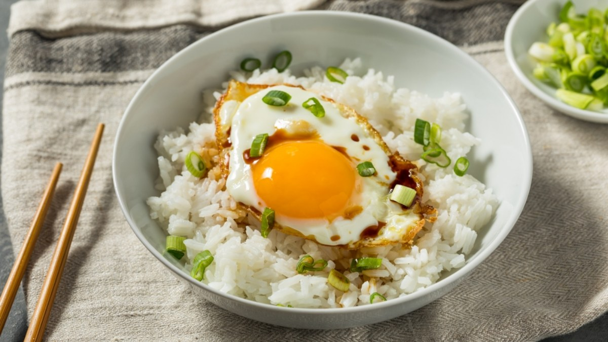

고소한 계란밥
따뜻한 밥 위에 반숙 계란과 간장을 더해 먹는 간단하지만 중독성 있는 한 끼입니다. 바쁜 아침이나 야식으로도 딱 좋아요.

▲ 반숙 계란을 올린 계란밥
바로가기
재료
- 따뜻한 밥 1공기
- 계란 2개
- 버터 1조각
- 대파 약간
- 김가루 약간
- 양념
조리 순서
- 따뜻한 밥을 그릇에 담고 버터를 올린다.
- 프라이팬에 계란을 반숙으로 굽는다.
- 밥 위에 계란을 올리고 간장과 참기름을 넣는다.
- 먹기 직전에 김가루와 대파를 뿌려야 더욱 고소한 맛이 살아난다.
계란밥 영양정보 (1인분 기준)
| 영양소 |
함량 |
| 수치 |
1일 권장 대비 |
| 열량 |
450 kcal |
23% |
| 단백질 |
18 g |
33% |
| 나트륨 |
750 mg |
38% |
맨 위로 ↑
레시피 출처
← 목록으로 돌아가기